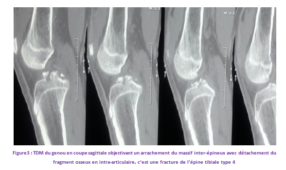
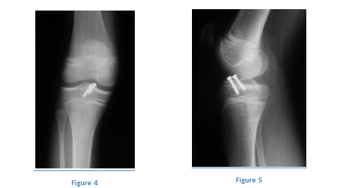
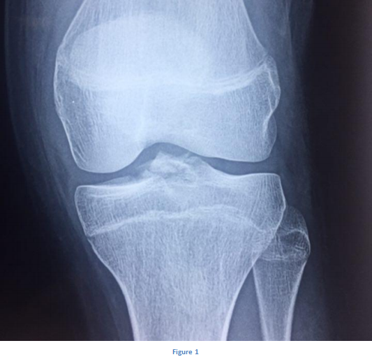

Cas clinique 14
Genou
Patient de 14 ans, sans antécédents particuliers, victime d’un traumatisme du genou lors d’un accident de la voie publique.
À l’examen on avait retrouvé un genou tuméfié et douloureux, sans ouverture cutanée ni troubles vasculo-nerveux.
1. Quel est votre diagnostic ? Interprétez la radiographie. Figure 1 Figure 2 R1 C1 AP ++
2.Quel autre examen paraclinique demandez vous ?R2
4.Quelles sont les complications possibles ?R4
5.Quelles sont les séquelles possibles ? R5
Réponse :
Fracture de l’épine tibiale type 4.
Réponse :
: un scanner du genou. (Figure3 )

Au bloc opératoire, sous anesthésie générale, réduction du foyer et fixation par deux vis canulées. (Figure 4 et 5)

Réponse :
- Lésions ligamentaires associées.
- Lésions méniscales associées.
Réponse :
- Lésions ligamentaires associées.
- Lésions méniscales associées.
- Laxité résiduelle par distension du LCA ou par réduction insuffisante.
- Diminution des amplitudes articulaires du genou après immobilisation prolongée ou par réduction insuffisante.
Commentaire :
La fracture des épines tibiales est relativement rare, son incidence est de 3 cas/100.000 fractures de l’enfant, les adolescents sportifs entre 8 et 17 ans étant plus exposés.
Le fragment détaché correspond à la zone d’insertion osseuse du ligament croisé antérieur.
Commentaire :
Commentaire :
- Fracture type 1 : Traitement orthopédique par immobilisation cruro-pédieuse genou en extension.
- Fracture type 2 : Réduction sous anesthésie générale par extension du genou puis immobilisation cruro-pédieuse genou en extension.
Traitement chirurgical si traitement orthopédique inefficace.
- Fracture type 3 et 4 : Réduction et ostéosynthèse chirurgicale par arthroscopie ou arthrotomie puis immobilisation cruro-pédieuse genou à 20 degré de flexion.
Plusieurs types d’ostéosynthèse ont été décrits à savoir l’ostéo-suture par du fil résorbable, le fil d’acier et le vissage
Commentaire :
Figure 1

Figure 1

Classification de Meyers et Mc Keever :
- TYPE 1 : Fracture incomplète sans déplacement ou déplacement minime de la partie antérieure du fragment.
- TYPE 2 : Fracture complète avec persistance d’une charnière postérieure cartilagineuse qui limite le déplacement à un soulèvement de la partie antérieure du fragment.
- TYPE 3 : Séparation complète du fragment. Le fragment est souvent attiré vers le haut se plaçant au dessus de la corne antérieure du ménisque médial et parfois latéral. Cette interposition explique l’impossibilité de réduire orthopédiquement certaines de ces fractures.
- TYPE 4 : Fracture comminutive.

Références
- Wiley JJ, Baxter MP.
Tibial spine fractures in children. Clin Orthop Rel Res 1988- 1990.
- De Courtivron B, Mauny C.
Les fractures des épines tibiales. Ann Orthop Ouest 1996;28:180—3.
- Stanitski C.L. Ligamentous
injuries of the knee. In Stanitsky, Pediatric & adolescent sports medicine, W.B. Saunders, Philadelphia, 1994, 406-432.
- P,Moulies.D,Padovani.JP,Lesaux.D.
Les fractures des épines tibiales chez l’enfant,Etude de 26 cas. Ann. Chir. Infant. 1976,17(4),237-250.
- HM,Mac Keever.FM.
Fractures of the intercondylar eminence of the tibia. J.Bone. Joint.Surg.1959,41A,209-222.
- PH.
Fractures des épines tibiales chez l’enfant (à propos de 27 cas). Thèse Bordeaux 1989.
- Louis ML, Guillaume JM, Launay F, Toth C, Jouve JL, Bollini G.
Surgical management of type II tibial intercondylar eminence fractures in children. J Pediatr Orthop B 2008;17:231—5.